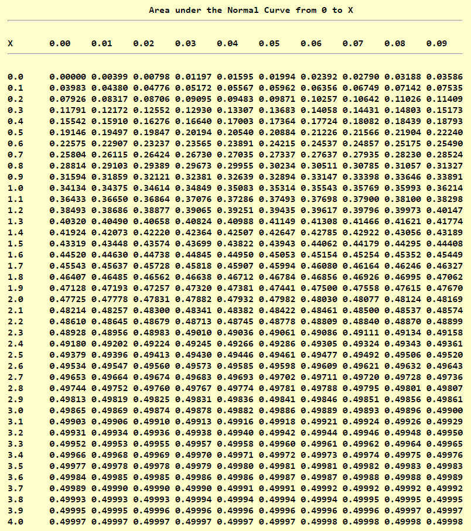

Story
Please Check back later 😊
I greet you this day,
First: read the notes including the Teacher-Student scenarios.
Second: view the videos.
Third: solve the questions/solved examples.
Fourth: check your solutions with my thoroughly-explained solutions.
Fifth: check your answers with the calculators as applicable.
The Wolfram Alpha widget (many thanks to the developers) are used for the calculators.
Comments, ideas, areas of improvement, questions, and constructive criticisms are welcome.
You may contact me.
If you are my student, please do not contact me here. Contact me via the school's system.
Thank you for visiting.
Samuel Dominic Chukwuemeka (Samdom For Peace) B.Eng., A.A.T, M.Ed., M.S
Students will:
(1.) Define the sampling distribution of a statistic.
(2.) Generate simulations OR perform some classroom activities to demonstrate the sampling distribution
of a statistic.
(3.) Discuss the sampling distribution of the sample mean.
(4.) Discuss the sampling distribution of the sample proportion.
(5.) Discuss the sampling distribution of the sample standard deviation.
(6.) Discuss the sampling distribution of the sample range.
(7.) Discuss the sampling distribution of the sample median.
(8.) Solve problems involving the sampling distribution of a statistic.
Skills Measured/Acquired
(1.) Use of prior knowledge
(2.) Critical thinking
(3.) Interdisciplinary connections/applications
(4.) Technology (using R/RStudio, TI-84 Plus and Graphing Calculators among others)
(5.) Active participation through direct questioning
(6.) Research
Please Check back later 😊
Case 1: Population is not normally distributed, but sample size is greater than 30
OR
Case 2: Population is normally distributed, and sample size is any size
$
(1.)\;\; \mu_{\bar{x}} = \mu \\[5ex]
(2.)\;\; \sigma_{\bar{x}} = \dfrac{\sigma}{\sqrt{n}} \\[5ex]
(3.)\;\; z = \dfrac{\bar{x} - \mu_{\bar{x}}}{\sigma_{\bar{x}}} \\[5ex]
(4.)\;\; z = \dfrac{\bar{x} - \mu_{\bar{x}}}{\dfrac{\sigma}{\sqrt{n}}} \\[7ex]
(5.)\;\; z = \dfrac{\sqrt{n}(\bar{x} - \mu_{\bar{x}})}{\sigma_{\bar{x}}} \\[5ex]
$
Condition 1: Simple Random Sample.
(I.) The sample may be taken with or without replacement.
However, if the sample is taken without replacement; then the population size must be at least ten times
bigger than the sample size.
If sampling is done without replacement, then N ≥ 10n
Condition 2: Independent Trials.
(II.) Verify that the trials are independent: The sample size is no more than 5% of the population size.
n ≤ 0.05N
Condition 3: Large Sample Size
(III.) The sample size must have at least ten successes and at least ten failures.
$
(A.)\;\; np \ge 10 \\[3ex]
(B.)\;\; nq \ge 10 \\[3ex]
$
Formulas: (When all conditions are met)
$
n\hat{p} \ge 10 \;\;\;and\;\;\; n\hat{q} \ge 10 \\[3ex]
(1.)\;\; \hat{p} = \dfrac{x}{n} \\[5ex]
(2.)\;\; p + q = 1 \\[3ex]
(3.)\;\; \hat{p} + \hat{q} = 1 \\[3ex]
(4.)\;\; \mu_{\hat{p}} = p \\[3ex]
(5.)\;\; \sigma_{\hat{p}} = \sqrt{\dfrac{p * q}{n}} \\[5ex]
(6.)\;\; z = \dfrac{\hat{p} - \mu_{\hat{p}}}{\sigma_{\hat{p}}} \\[5ex]
(7.)\;\; z = \dfrac{\hat{p} - p}{\sigma_{\hat{p}}} \\[7ex]
\underline{When \;\;p\;\; is\;\;not\;\;known} \\[3ex]
(1.)\;\; \sigma_{\hat{p}est} = \sqrt{\dfrac{\hat{p} * \hat{q}}{n}}
$
The Sampling Distribution of a statistic is the probability distribution of all values of the
statistic when all possible samples of the same size, n are taken from the same population.
An estimator is a statistic used to infer the value of a population parameter.
An unbiased estimator is a statistic that targets the value of the population parameter such that
the sampling distribution of the statistic has a mean that is equal to the mean of the corresponding
parameter.
Precision also known as the Amount of Sampling Error is the error that results from using
a sample
statistic to estimate a population parameter.
For example; it is the error that results from using:
Sample Proportion to estimate Population Proportion
Sample Mean to estimate Population Mean
Sample Variance to estimate Population Variance
Sample Standard Deviation to estimate Population Standard Deviation
Precision is the closeness of two or more measurements to each other.
Standard Error is the standard deviation of a sampling distribution.
Precision is measured using the standard deviation of the sampling distribution.
An estimator is precise if it gives a small standard error.
Accuracy also known as the Amount of Bias is the distance between the mean value of the
estimator and the population parameter.
It is the closeness of a measured value to a standard value.
It is measured using the center of the sampling distribution.
For unbiased estimators, the bias is zero. In other words, there is no bias.
One can be imprecise, but accurate. One can be precise, but inaccurate. One can be both precise
and accurate. Discuss.
This is defined as the probability distribution of the sample means, where all samples have the same
size, n; and are taken from the same population.
The Law of Large Numbers states that as the number of repetitions of a probability experiment
increases, the proportion with which a certain outcome is observed gets closer to the probability of
that outcome.
Would you rather conduct a census to get a population (parameter) size; or take random samples
(statistic) from that
population, and use it to estimate the population size? What are your reasons? Cost? Convenience?
Accuracy?
Assume we decide to do the later, do you think we might have some errors?
As discussed earlier in Introductory Statistics; a statistic is the numerical summary of a sample, while
a parameter
is the numerical summary of a population.
Let us begin by discussing the sampling distribution of the sample mean.
Do you mind if we take the ages of the students in the class?
Record the population size. N = ???
Calculate the population mean, μ
List the combinations of possible sample sizes, n = 2
Calculate the mean of those sample sizes.
Calculate the mean of the sample means.
Represent them using a dot plot (for easy representation) OR
Represent them using a histogram (to assess normality)
Interpret the probability of estimating the population mean using the sample mean.
Repeat the process for n = 3, 4, …, N − 1
What are our observations?
(1.) As the sample size increases, the sampling error decreases.
(2.) As the sample size increases, the mean of the sample means gets closer and closer to the population
mean.
We could do this because we know the population size.
Imagine a large population, and we do not know the population size?
How can we estimate the mean/average age of that population?
Behavior of the Sample Means
(1.) The sample means is an unbiased estimator of the population mean.
The mean of the sample means is the population mean.
The expected value of the sample mean is equal to the population mean.
(2.) The distribution of the sample means tends to be a normal distribution.
The Central Limit Theorem states that for all simple random samples of same size, n; where
n > 30; the sampling distribution of the sample mean can be approximated by a normal
distribution where the mean of the sample means is equal to the population mean; and the sample standard
deviation of the sample means is equal to the population standard deviation divided by the square root
of the sample size.
Given: simple random samples of same size, n taken from the same population where n >
30:
$
\mu_{\bar{x}} = \mu \;\;\;and\;\;\; \sigma_{\bar{x}} = \dfrac{\sigma}{\sqrt{n}} \\[5ex]
$



Chukwuemeka, Samuel Dominic (2023). Sampling Distributions.
Retrieved from https://mathematicscourses.github.io/Statistics/
Black, Ken. (2012). Business Statistics for Contemporary Decision Making (7th ed.).
New Jersey: Wiley
Gould, R., & Ryan, C. (2016). Introductory Statistics: Exploring the world through data (2nd
ed.). Boston:
Pearson
Gould, R., Wong, R., & Ryan, C. N. (2020). Introductory Statistics: Exploring the world through
data (3rd ed.). Pearson.
Kozak, Kathryn. (2015). Statistics Using Technology (2nd ed.).
OpenStax, Introductory Statistics.OpenStax CNX. Sep 28, 2016.
Retrieved from https://cnx.org/contents/30189442-6998-4686-ac05-ed152b91b9de@18.12
Sullivan, M., & Barnett, R. (2013). Statistics: Informed decisions using data with an introduction to
mathematics of finance
(2nd custom ed.). Boston: Pearson Learning Solutions.
Triola, M. F. (2015). Elementary Statistics using the TI-83/84 Plus Calculator
(5th ed.). Boston: Pearson
Triola, M. F. (2022). Elementary Statistics. (14th ed.) Hoboken: Pearson.
Weiss, Neil A. (2015). Elementary Statistics (9th ed.). Boston: Pearson
TI Products | Calculators and Technology | Texas Instruments. (n.d.). Education.ti.com. Retrieved March
18, 2023, from https://education.ti.com/en/products
GCSE Exam Past Papers: Revision World. Retrieved April 6, 2020, from
https://revisionworld.com/gcse-revision/gcse-exam-past-papers
HSC exam papers | NSW Education Standards. (2019). Nsw.edu.au.
https://educationstandards.nsw.edu.au/wps/portal/nesa/11-12/resources/hsc-exam-papers
NSC Examinations. (n.d.). www.education.gov.za.
https://www.education.gov.za/Curriculum/NationalSeniorCertificate(NSC)Examinations.aspx
Normal Distribution Table (Left Shaded Area):
https://www.math.arizona.edu/~rsims/ma464/standardnormaltable.pdf
Normal Distribution Table (Center Shaded Area):
https://itl.nist.gov/div898/handbook/eda/section3/eda3671.htm
51 Real SAT PDFs and List of 89 Real ACTs (Free) : McElroy Tutoring. (n.d.).
Mcelroytutoring.com. Retrieved December 12, 2022,
from
https://mcelroytutoring.com/lower.php?url=44-official-sat-pdfs-and-82-official-act-pdf-practice-tests-free